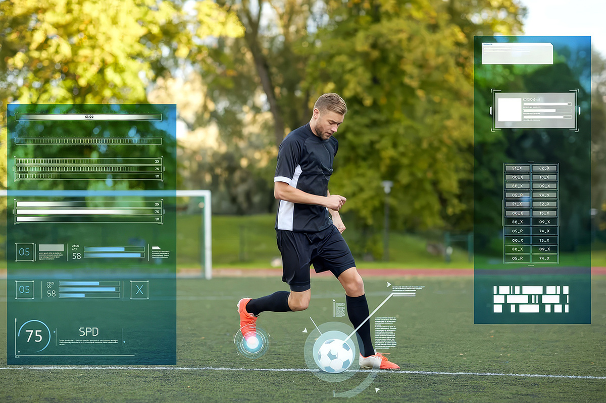
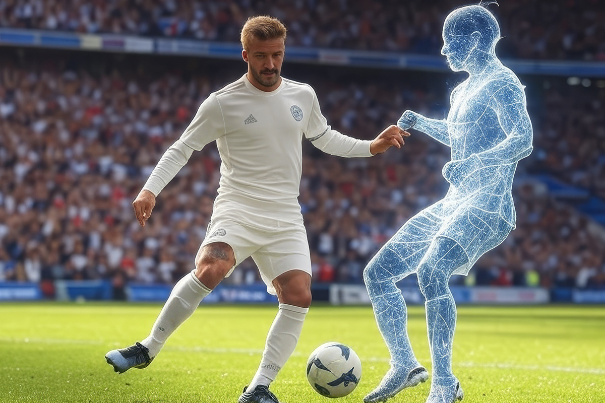

La IA llegó al fútbol
Ahora te enseña a chutear como Beckham
Ahora te enseña a chutear como Beckham

La tecnología está revolucionando -nuevamente- el fútbol profesional de una manera que ni los más grandes futbolistas podrían haber imaginado. No, no me refiero al famoso VAR (que hasta la fecha provoca ronchas entre hinchas y clubes), sino de una aplicación basada en inteligencia artificial que está dando qué hablar.
Así han sido los inicios de quienes se acercan al fútbol con la ilusión de entrar a un equipo profesional, dándolo todo con rutinas diarias de horas y horas de práctica para perfeccionar tiros libres, pases y demás actitudes deportivas. Entrenamientos que al final, dependían de un esfuerzo constante y, por supuesto, la guía de sus entrenadores. Se trataba de repetir la fórmula hasta lograr el resultado esperado, con la esperanza de que algún día esa dedicación los lleve a la cima.
Pero ahora, como te adelantamos, la IA entró a la cancha para potenciar el talento de jugadores que mañana podrían ser leyendas del fútbol.

Hoy en día, los deportistas tienen acceso a herramientas de tecnología avanzadas como la app Optimum Grade Response, diseñada para analizar y mejorar la técnica de chuteo, ofreciendo un entrenamiento personalizado y más eficiente.
Según la empresa, la app mejora la precisión de jugadas a balón parado entre un 70-80%. Permite incluso conocer los detalles del rendimiento, identificar áreas de mejora y perfeccionar sus habilidades rápidamente.

¿Por qué es la inspiración detrás de la app? Si no recuerdas, Beckham es conocido por su gran habilidad para los tiros libres y precisión. Y, lo más interesante, es que su técnica fue estudiada minuciosamente por Optimum Grade. Tanto, que llegaron a descubrir la zona exacta del pie con la que Beckham chuteaba y cómo hacía un giro externo de su cadera para generar la pegada perfecta.
Ese estudio se traduce hoy en una metodología que permite a jugadores replicar la técnica del futbolista solo al utilizar la IA, cuyos beneficios son:
De hecho, esta aplicación está siendo utilizada en clubs inferiores para potenciar a las próximas figuras. Así que, al igual que los grandes del pasado, los jugadores de hoy podrán combinar su pasión y dedicación con las nuevas tecnologías disponibles a su favor. ¿Estás listo para entrenar como Beckham?
 Tecnología
TecnologíaSi eres como yo y revisas TikTok e Instagram constantemente, te habrás dado cuenta de que estas redes son casi como un experimento social.
 Tecnología
TecnologíaHablamos mucho de inteligencia artificial. La tenemos integrada en nuestra vida, nos ayuda en nuestros trabajos y le preguntamos cosas de…
 Tecnología
TecnologíaDurante años hemos pensado en la inteligencia artificial como algo súper frío: servidores gigantes, computadores procesando datos y…